Code
x <- 1:6
y <- c(2, 4, 3, 5, 7, 6)
plot(x, y)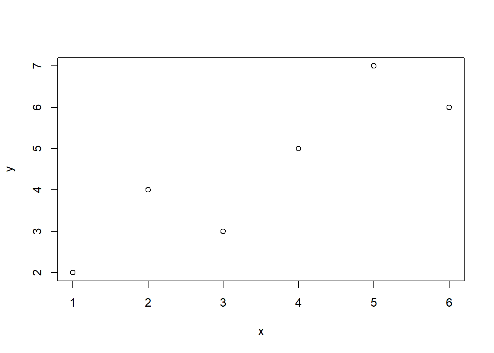
本章介绍基础 R 绘图方法，重点包括 plot() 的基本用法、图形元素修改、常见图形类型、多图布局和图片保存。
| 顺序 | 绘图内容 | 代表函数或参数 |
|---|---|---|
| 1 | 绘制基础图 | plot(x, y) |
| 2 | 添加图形说明 | main、xlab、ylab |
| 3 | 修改图中的点和线 | pch、cex、col、type、lty、lwd |
| 4 | 修改坐标范围 | xlim、ylim |
| 5 | 添加辅助元素 | grid()、abline()、text()、legend() |
| 6 | 画常见统计图 | 散点图、折线图、直方图、箱线图、柱状图 |
| 7 | 多图排列 | par()、layout() |
| 8 | 保存图片 | png()、pdf()、dev.off() |
基础 R 画图通常可以分成五步：
| 步骤 | 做什么 | 例子 |
|---|---|---|
| 第一步 | 准备变量 | x <- 1:6，y <- c(2, 4, 3, 5, 7, 6) |
| 第二步 | 画基础图 | plot(x, y) |
| 第三步 | 修改元素 | 改标题、颜色、点形状、线宽 |
| 第四步 | 添加元素 | 加网格线、参考线、文字、图例 |
| 第五步 | 输出图片 | 保存为 PNG 或 PDF |
示例变量如下。
x <- 1:6
y <- c(2, 4, 3, 5, 7, 6)
plot(x, y)
x 控制横轴位置，y 控制纵轴位置。
plot(x, y) 中的 x 和 y 是最核心的两个参数。
| 参数 | 控制什么 | 说明 |
|---|---|---|
x |
横轴变量 | 第一个点的横坐标、第二个点的横坐标，依次排列 |
y |
纵轴变量 | 第一个点的纵坐标、第二个点的纵坐标，依次排列 |
例如：
x <- c(1, 2, 3, 4)
y <- c(2, 5, 4, 6)
plot(x, y)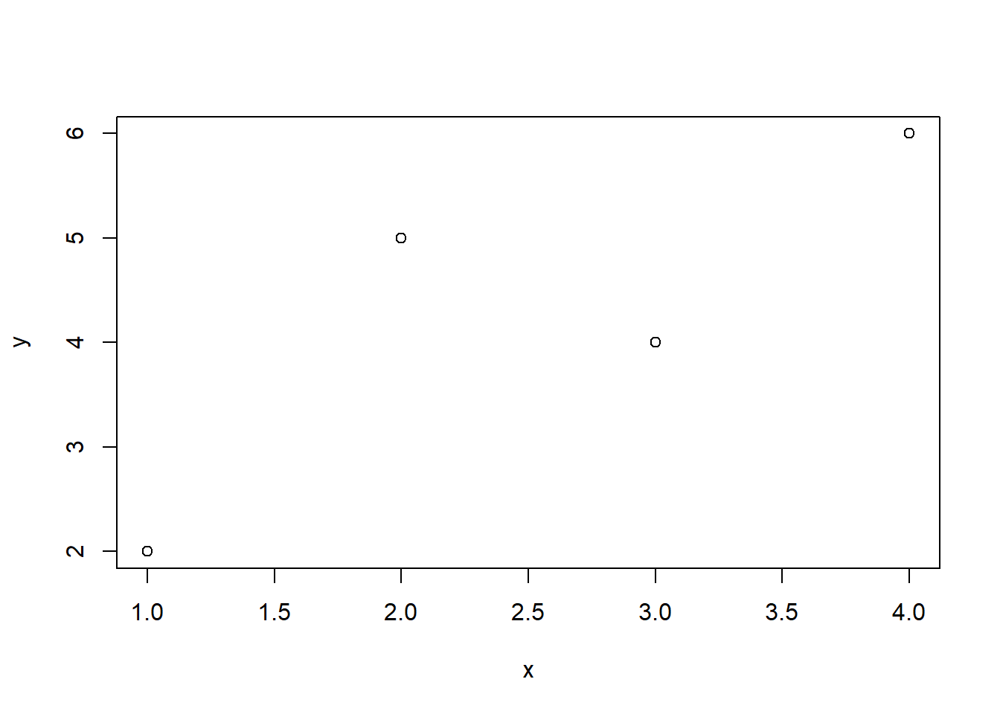
这张图上有 4 个点：
| 点 | 横坐标 x | 纵坐标 y |
|---|---|---|
| 第1个点 | 1 | 2 |
| 第2个点 | 2 | 5 |
| 第3个点 | 3 | 4 |
| 第4个点 | 4 | 6 |
以上坐标对应关系是散点图的基础。
图形说明通常包括标题、横轴名称和纵轴名称。
| 参数 | 控制什么 | 示例 |
|---|---|---|
main |
主标题 | "简单散点图" |
xlab |
横轴标题 | "时间" |
ylab |
纵轴标题 | "观测值" |
sub |
副标题 | "示例数据" |
plot(
x, y,
main = "简单散点图",
xlab = "时间",
ylab = "观测值",
sub = "示例数据"
)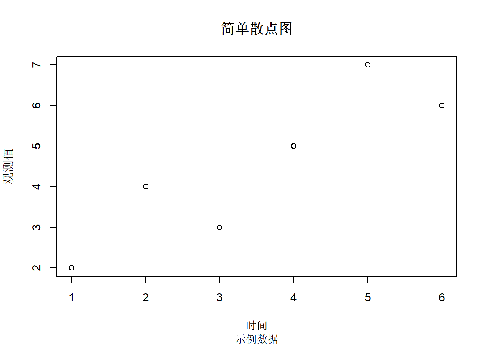
图形说明检查项：
pch 控制点的形状。
| 参数 | 控制什么 |
|---|---|
pch |
点的形状 |
常用点形状可以按“是否可填充”分成两类。pch = 21 到 pch = 25 比较特殊，可以同时设置边框颜色和填充颜色。
pch 取值 |
形状示例 | 点形状 | 是否可填充 | 常见用途 |
|---|---|---|---|---|
0 |
□ | 空心方形 | 否 | 简单分类标记 |
1 |
○ | 空心圆 | 否 | 默认散点、点较多时较轻 |
2 |
△ | 空心三角形 | 否 | 与圆点区分另一组 |
3 |
+ | 十字 | 否 | 强调位置，不强调面积 |
4 |
× | 叉号 | 否 | 标记特殊点 |
15 |
■ | 实心方形 | 否 | 分类对比 |
16 |
● | 实心圆 | 否 | 常用散点 |
17 |
▲ | 实心三角形 | 否 | 分组散点 |
18 |
◆ | 实心菱形 | 否 | 标记重点类别 |
19 |
● | 实心圆 | 否 | 基础示例和常规散点图 |
21 |
可填充圆 | 是 | 需要边框色和填充色时 | |
22 |
可填充方形 | 是 | 分组图 | |
24 |
▲ | 可填充三角形 | 是 | 分组图 |
plot(
x, y,
pch = 19,
main = "pch = 19：实心圆点",
xlab = "时间",
ylab = "观测值"
)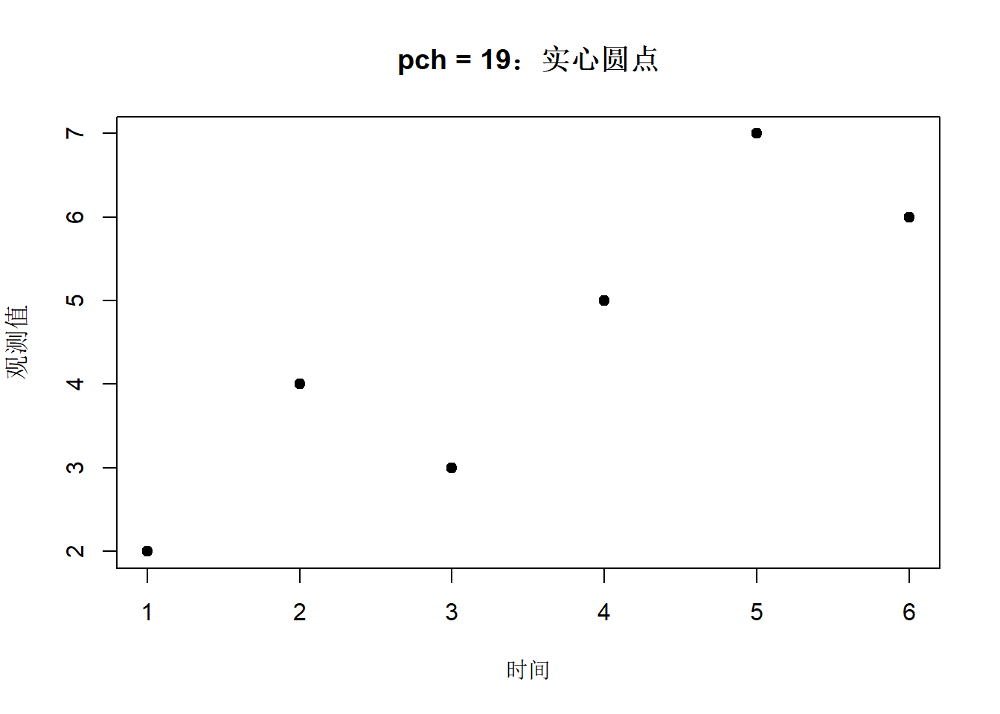
cex 控制点或文字的放大倍数。
| 参数 | 控制什么 | 示例 |
|---|---|---|
cex |
点的大小 | cex = 1 默认，cex = 1.5 放大 |
plot(
x, y,
pch = 19,
cex = 1.8,
main = "cex = 1.8：点变大",
xlab = "时间",
ylab = "观测值"
)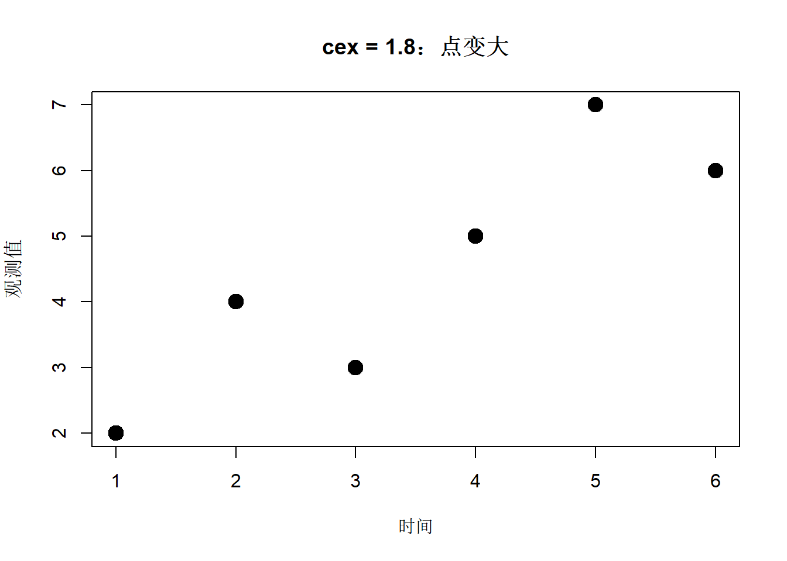
点过小会影响辨认，点过大会增加重叠。常用取值范围为 cex = 1.2 到 cex = 1.8。
col 控制颜色。颜色可以使用英文名称，也可以使用十六进制颜色代码。
| 参数 | 控制什么 | 示例 |
|---|---|---|
col |
点、线或文字的颜色 | "blue"，"red"，"#0072B2" |
英文颜色名较为直观，例如 "blue"、"red"、"gray70"。十六进制颜色代码适合正式作图，因为它能精确指定颜色。
十六进制颜色代码通常写成 #RRGGBB：
| 位置 | 含义 | 取值范围 |
|---|---|---|
# |
颜色代码的开头标记 | 固定写法 |
RR |
红色强度 | 00 到 FF |
GG |
绿色强度 | 00 到 FF |
BB |
蓝色强度 | 00 到 FF |
十六进制使用 0-9 和 A-F 表示数值。00 表示没有这种颜色，FF 表示这种颜色最强。例如：
| 颜色代码 | 色块 | 红色 RR | 绿色 GG | 蓝色 BB | 显示含义 |
|---|---|---|---|---|---|
#000000 |
00 |
00 |
00 |
黑色 | |
#FFFFFF |
FF |
FF |
FF |
白色 | |
#FF0000 |
FF |
00 |
00 |
红色 | |
#00FF00 |
00 |
FF |
00 |
绿色 | |
#0000FF |
00 |
00 |
FF |
蓝色 | |
#0072B2 |
00 |
72 |
B2 |
常用蓝色 |
plot(
x, y,
pch = 19,
cex = 1.5,
col = "#0072B2",
main = "col 控制颜色",
xlab = "时间",
ylab = "观测值"
)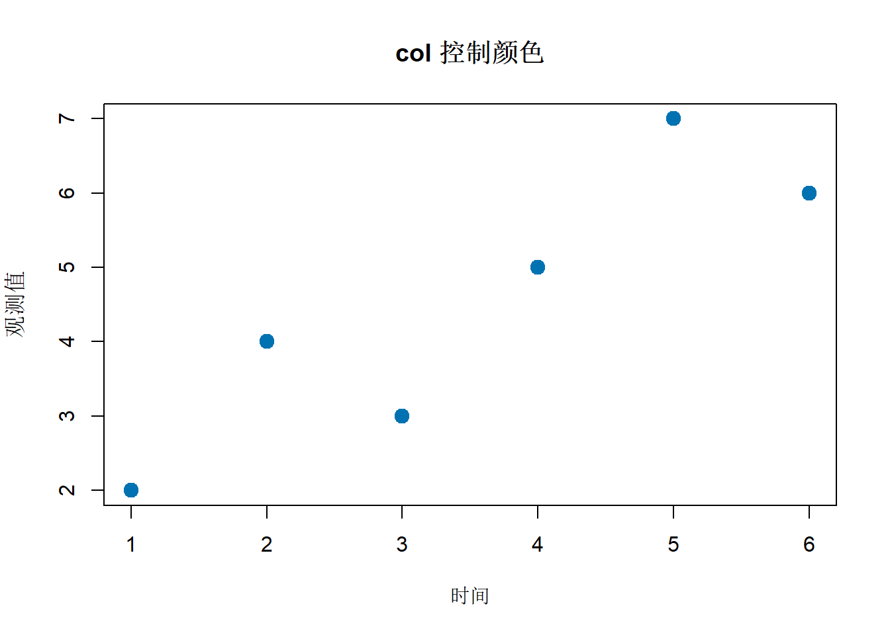
配色规则：主体信息用颜色，辅助信息用灰色。
当 pch = 21、22、24 这类点形状时，可以同时设置边框色和填充色。
| 参数 | 控制什么 |
|---|---|
pch = 21 |
使用可填充圆点 |
col |
点的边框颜色 |
bg |
点的填充颜色 |
plot(
x, y,
pch = 21,
cex = 1.8,
col = "white",
bg = "#0072B2",
main = "pch = 21 时：col 是边框，bg 是填充",
xlab = "时间",
ylab = "观测值"
)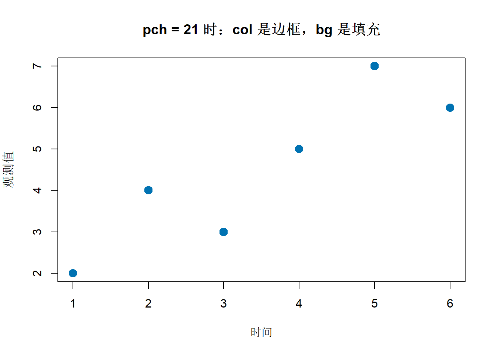
这种点在分组散点图中很常用，因为填充色醒目，白色边框能减少点重叠时的混乱。
type 控制图形主体是点、线，还是点线结合。
type |
控制什么 | 适合场景 |
|---|---|---|
"p" |
只画点 | 散点图 |
"l" |
只画线 | 时间变化、趋势变化 |
"b" |
点和线都画 | 点数较少的趋势图 |
"n" |
只建立坐标，不画点线 | 后面再手动添加元素 |
只画点：
plot(x, y, type = "p", main = "type = 'p'：只画点")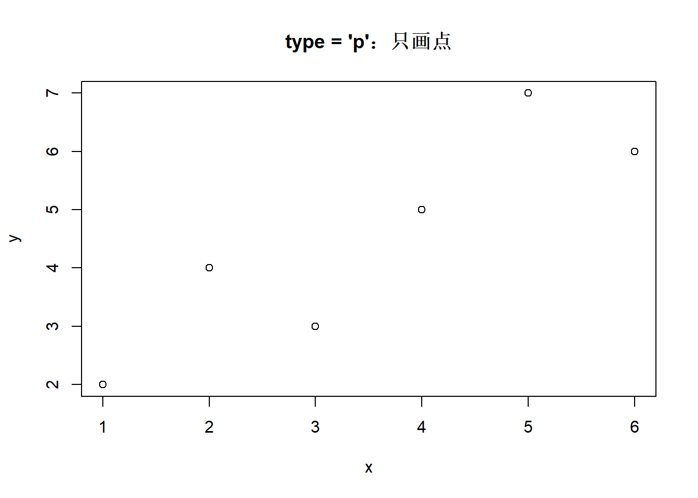
只画线：
plot(x, y, type = "l", main = "type = 'l'：只画线")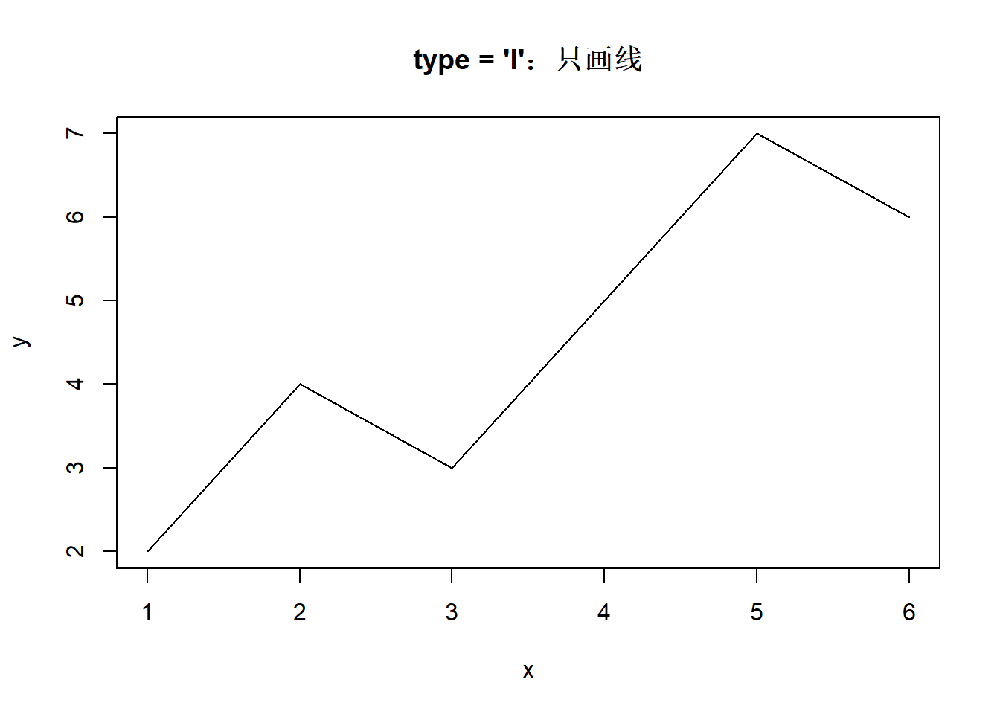
点和线都画：
plot(x, y, type = "b", main = "type = 'b'：点和线都画")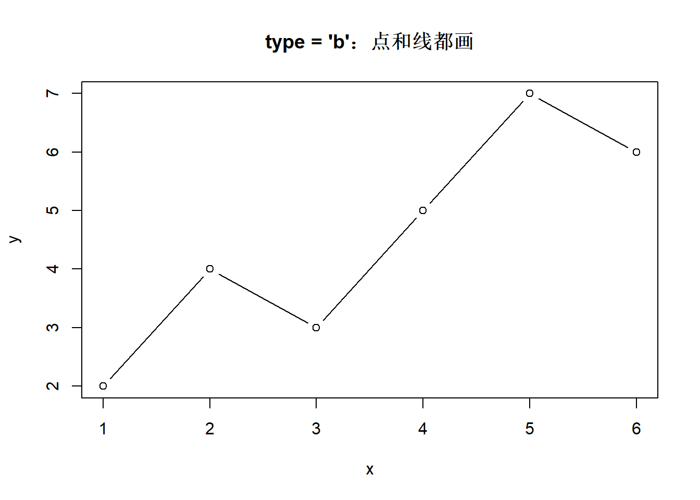
如果图里有线，常用 lty 和 lwd 修改线条。
| 参数 | 控制什么 | 示例 |
|---|---|---|
lty |
线型 | 1 实线，2 虚线，3 点线 |
lwd |
线宽 | 1 默认，2 更粗 |
常用线型如下：
lty 取值 |
线条示例 | 线型名称 | 常见用途 |
|---|---|---|---|
1 |
实线 | 主要趋势线 | |
2 |
虚线 | 参考线、平均线 | |
3 |
点线 | 辅助线 | |
4 |
点划线 | 与其他线区分 | |
5 |
长虚线 | 强调但不作为主线 |
常用线宽如下：
lwd 取值 |
线条示例 | 说明 |
|---|---|---|
1 |
默认线宽 | |
2 |
常用强调线宽 | |
3 |
更醒目的主线 |
plot(
x, y,
type = "l",
lty = 2,
lwd = 3,
col = "#D55E00",
main = "lty 控制线型，lwd 控制线宽",
xlab = "时间",
ylab = "观测值"
)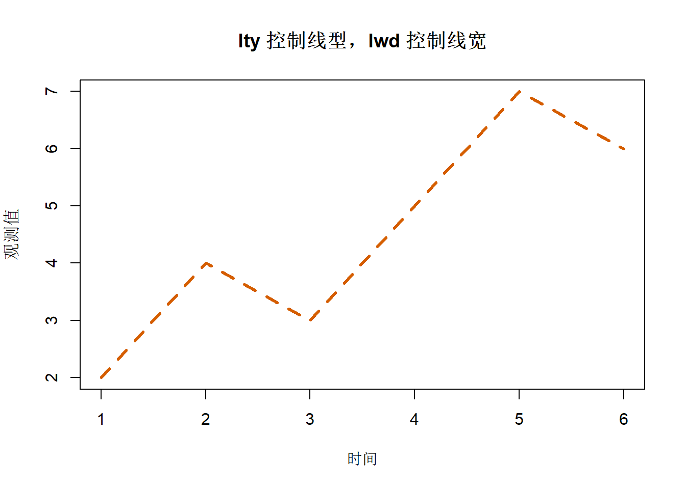
黑白打印场景中，线条可同时使用不同的 lty 进行区分。
xlim 和 ylim 控制横轴、纵轴的显示范围。
| 参数 | 控制什么 | 示例 |
|---|---|---|
xlim |
横轴范围 | xlim = c(0, 8) |
ylim |
纵轴范围 | ylim = c(0, 10) |
plot(
x, y,
pch = 19,
col = "#0072B2",
xlim = c(0, 8),
ylim = c(0, 10),
main = "xlim 和 ylim 控制坐标范围",
xlab = "时间",
ylab = "观测值"
)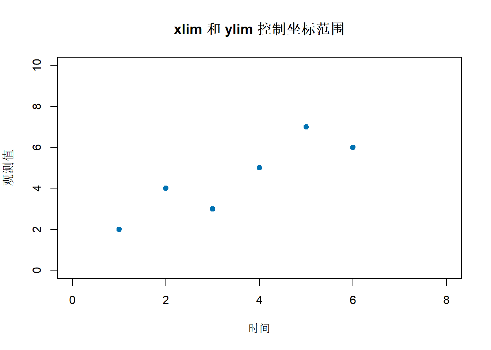
坐标范围用于改善图形可读性。过大的范围会压缩数据变化，过窄的范围可能夸大差异。
画完基础图后，可以继续添加元素。grid() 用来添加网格线，帮助读数。
| 函数或参数 | 控制什么 |
|---|---|
grid() |
添加网格线 |
col |
网格线颜色 |
lty |
网格线线型 |
plot(
x, y,
pch = 19,
col = "#0072B2",
main = "添加浅灰色网格线",
xlab = "时间",
ylab = "观测值"
)
grid(col = "gray88", lty = 1)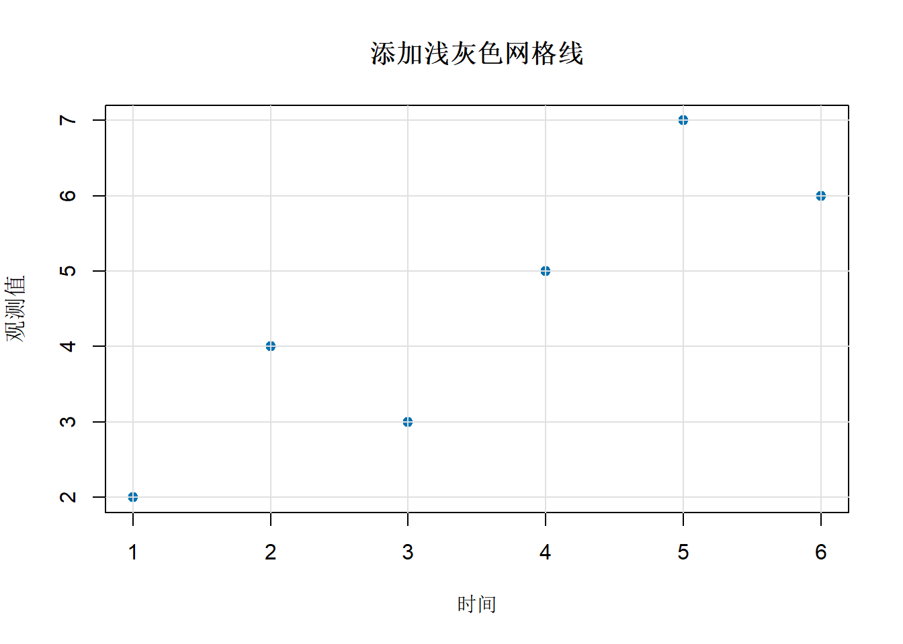
网格线一般使用浅灰色，视觉强度应低于数据点。
abline() 可以添加水平线或垂直线。
| 参数 | 控制什么 | 示例 |
|---|---|---|
h |
水平参考线的位置 | h = 5 |
v |
垂直参考线的位置 | v = 3 |
col |
参考线颜色 | col = "gray60" |
lty |
参考线线型 | lty = 2 |
lwd |
参考线线宽 | lwd = 2 |
plot(
x, y,
pch = 19,
col = "#0072B2",
main = "添加水平和垂直参考线",
xlab = "时间",
ylab = "观测值"
)
abline(h = 5, col = "gray60", lty = 2, lwd = 2)
abline(v = 3, col = "gray60", lty = 3, lwd = 2)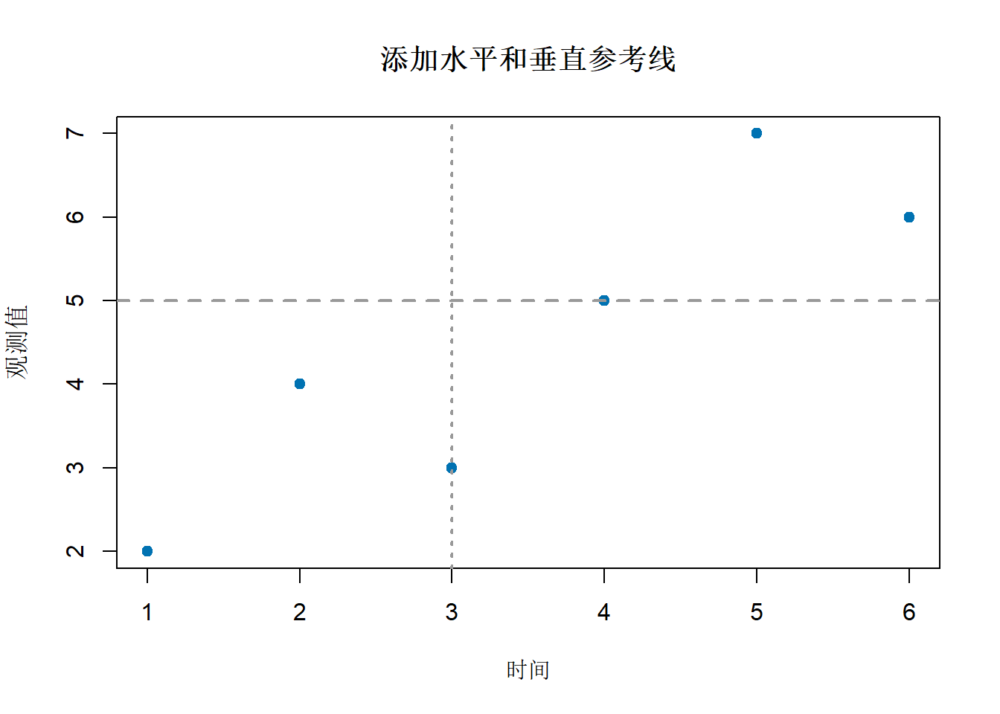
参考线用于辅助读图，例如标出标准值、平均值或特定时间点。
text() 可以在图中添加文字标注。适合标出某个重点点。
| 参数 | 控制什么 |
|---|---|
x |
文字所在位置的横坐标 |
y |
文字所在位置的纵坐标 |
labels |
要写出的文字 |
pos |
文字相对点的位置，1 下，2 左，3 上，4 右 |
cex |
文字大小 |
col |
文字颜色 |
plot(
x, y,
pch = 19,
col = "#0072B2",
main = "用 text 标出重点",
xlab = "时间",
ylab = "观测值"
)
text(
x = 2.5,
y = 3,
labels = "text",
pos = 3,
cex = 0.9,
col = "#D55E00"
)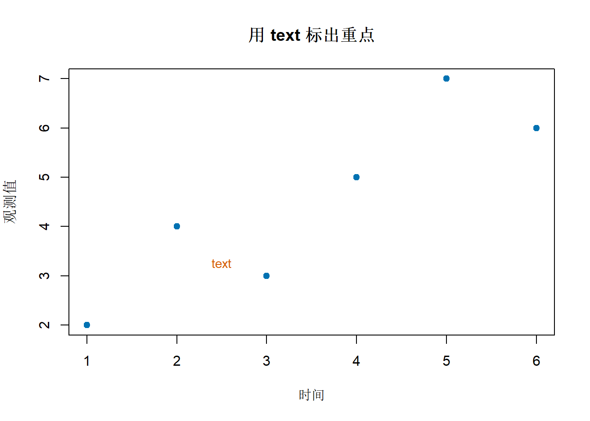
文字标注通常用于重点位置；过多标注会降低图形可读性。
当颜色、点形状或线型代表不同组时，图例用于说明符号含义。
示例分组数据如下。
group <- c("A", "A", "A", "B", "B", "B")
group_col <- c(A = "#0072B2", B = "#D55E00")| 函数或参数 | 控制什么 |
|---|---|
legend() |
添加图例 |
"topleft" |
图例位置，也可以写 "topright"、"bottomleft" 等 |
legend |
图例文字 |
pch |
图例中的点形状 |
col |
图例中的点或线颜色 |
bty = "n" |
去掉图例边框 |
plot(
x, y,
pch = 19,
col = group_col[group],
main = "用 legend 解释颜色",
xlab = "时间",
ylab = "观测值"
)
legend(
"topleft",
legend = names(group_col),
pch = 19,
col = group_col,
bty = "n"
)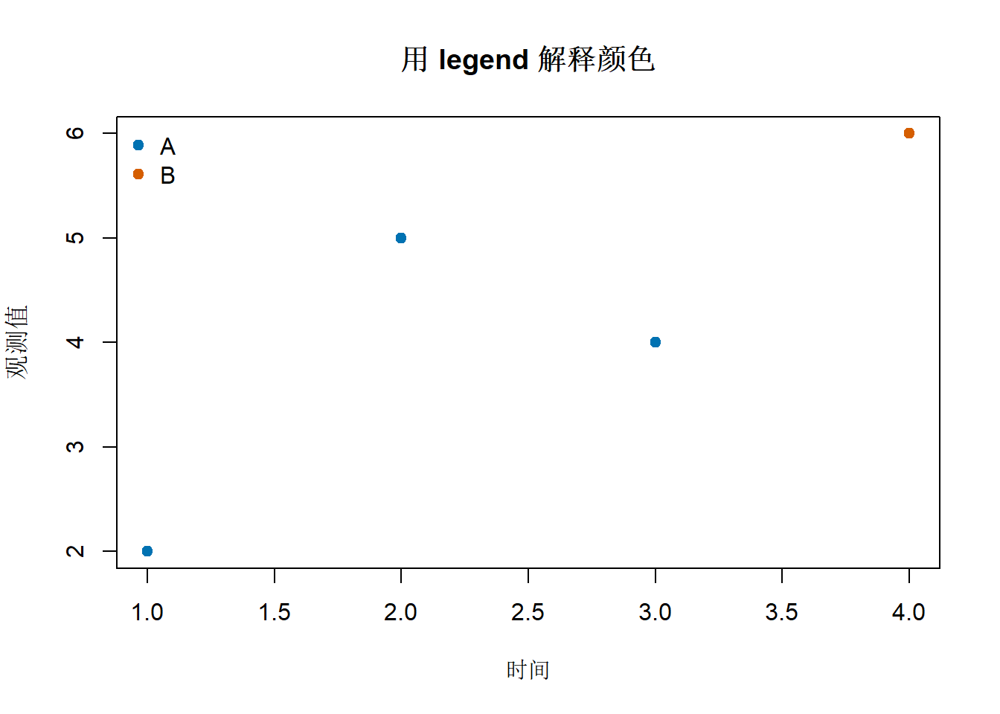
图例的任务是解释符号，不是装饰图形。
到这里，基础参数已经够画很多图。
| 参数 | 控制什么 | 常用场景 |
|---|---|---|
x |
横轴变量 | 所有基础图 |
y |
纵轴变量 | 所有基础图 |
main |
主标题 | 说明图的主题 |
xlab |
横轴标题 | 说明横轴变量 |
ylab |
纵轴标题 | 说明纵轴变量 |
sub |
副标题 | 补充说明 |
pch |
点形状 | 散点图 |
cex |
点或文字大小 | 强调重点 |
col |
颜色 | 点、线、文字 |
bg |
可填充点的填充色 | pch = 21 等 |
type |
点线类型 | 散点图、折线图 |
lty |
线型 | 折线或参考线 |
lwd |
线宽 | 折线或参考线 |
xlim |
横轴范围 | 调整显示范围 |
ylim |
纵轴范围 | 调整显示范围 |
散点图适合观察两个数值变量之间的关系。
下面用 R 自带的 mtcars 数据。wt 是汽车重量，mpg 是每加仑行驶英里数。
plot(
mtcars$wt, mtcars$mpg,
pch = 19,
col = "#0072B2",
main = "汽车重量与油耗",
xlab = "汽车重量",
ylab = "每加仑行驶英里数"
)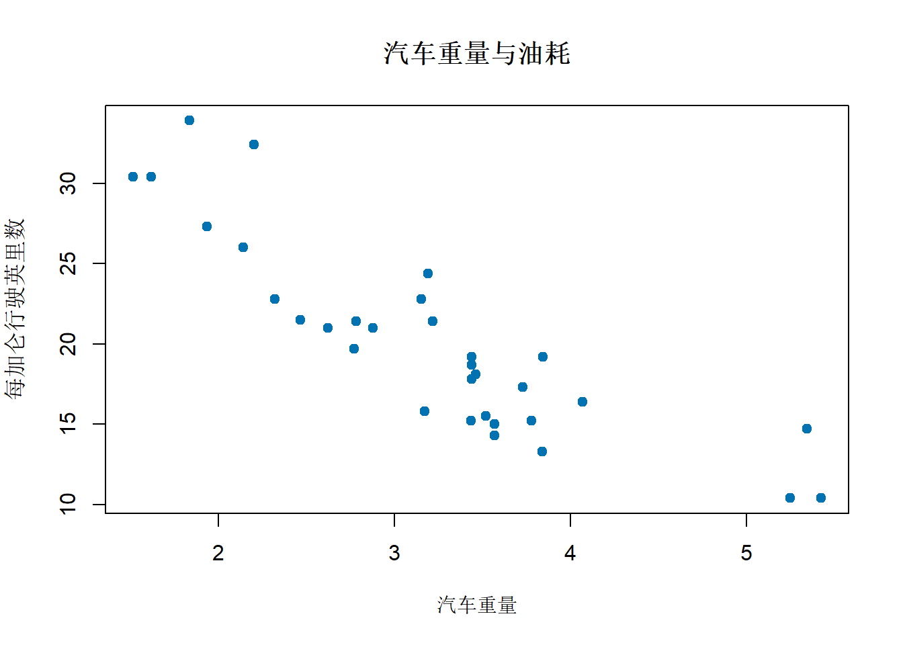
图中显示，汽车重量越大，mpg 通常越低。
下面按气缸数分组上色。颜色用于表达类别。
cyl_col <- c(
"4" = "#009E73",
"6" = "#E69F00",
"8" = "#D55E00"
)
plot(
mtcars$wt, mtcars$mpg,
pch = 21,
bg = cyl_col[as.character(mtcars$cyl)],
col = "white",
cex = 1.4,
main = "不同气缸数汽车的重量与油耗",
xlab = "汽车重量",
ylab = "每加仑行驶英里数"
)
legend(
"topright",
legend = paste(names(cyl_col), "缸"),
pch = 21,
pt.bg = cyl_col,
col = "white",
bty = "n"
)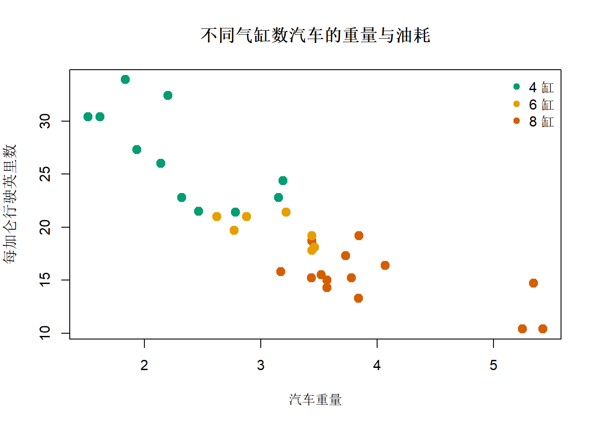
这里出现一个新参数：
| 参数 | 控制什么 |
|---|---|
pt.bg |
图例中可填充点的填充颜色 |
折线图适合表达有顺序的数据，比如时间变化。
month <- 1:12
temperature <- c(2, 4, 8, 13, 18, 22, 25, 24, 20, 14, 8, 3)
plot(
month, temperature,
type = "l",
lwd = 2,
col = "#0072B2",
main = "一年中温度的变化",
xlab = "月份",
ylab = "温度"
)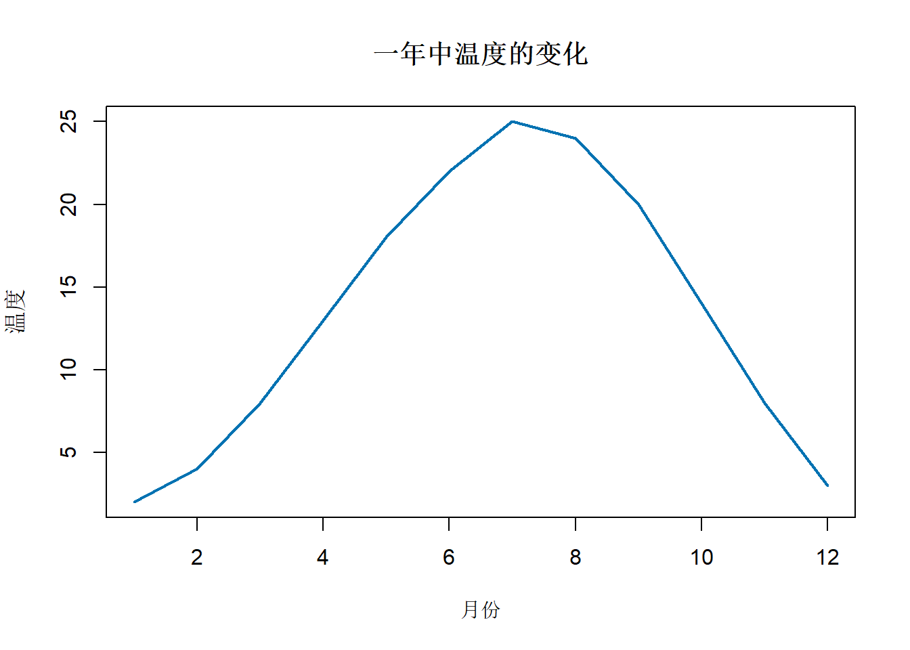
type = "b" 可同时显示折线和每个月的观测点。
plot(
month, temperature,
type = "b",
pch = 19,
lwd = 2,
col = "#0072B2",
main = "折线图也可以显示观测点",
xlab = "月份",
ylab = "温度"
)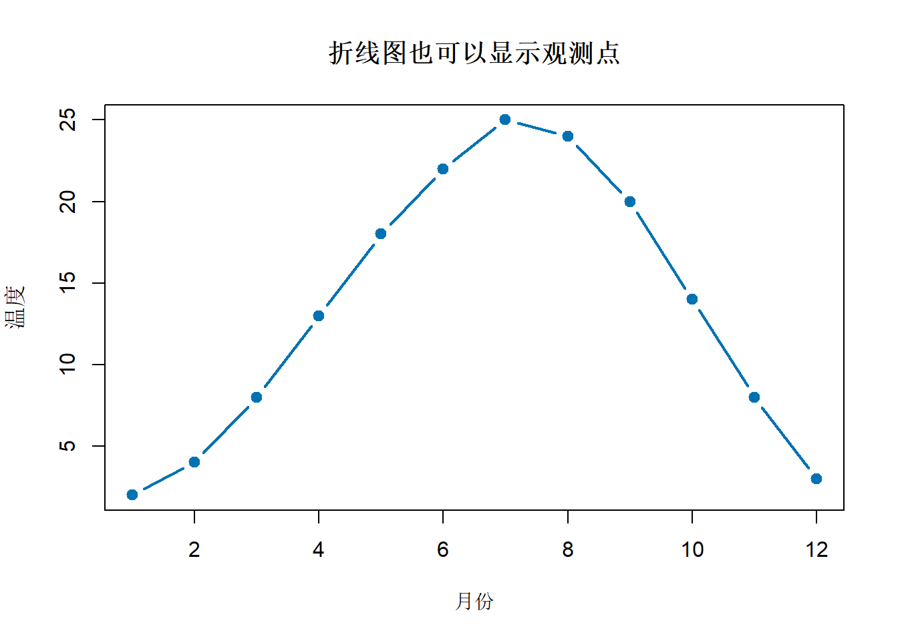
折线图的横轴应具有自然顺序。无序分类变量通常不适合直接连线。
直方图适合观察一个数值变量的分布。
hist(airquality$Temp)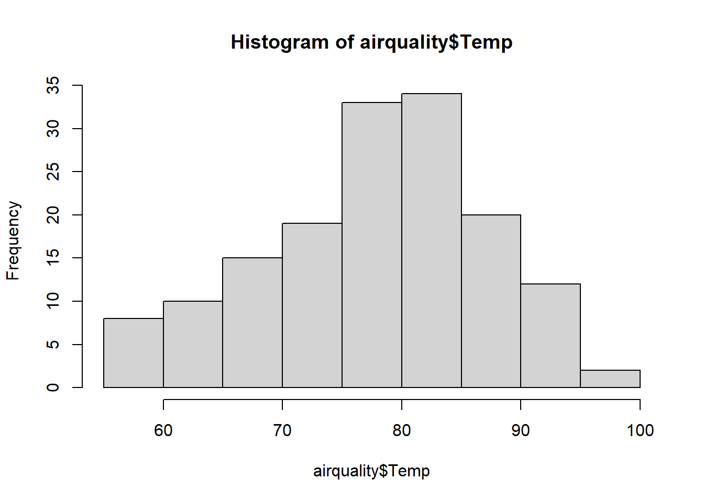
默认直方图可以进一步修改标题、颜色和分组数量。
| 参数 | 控制什么 |
|---|---|
breaks |
分成多少个柱子，或者指定分组断点 |
col |
柱子的填充颜色 |
border |
柱子的边框颜色 |
main |
主标题 |
xlab |
横轴标题 |
hist(
airquality$Temp,
breaks = 10,
col = "#DCEEF8",
border = "white",
main = "温度分布",
xlab = "温度"
)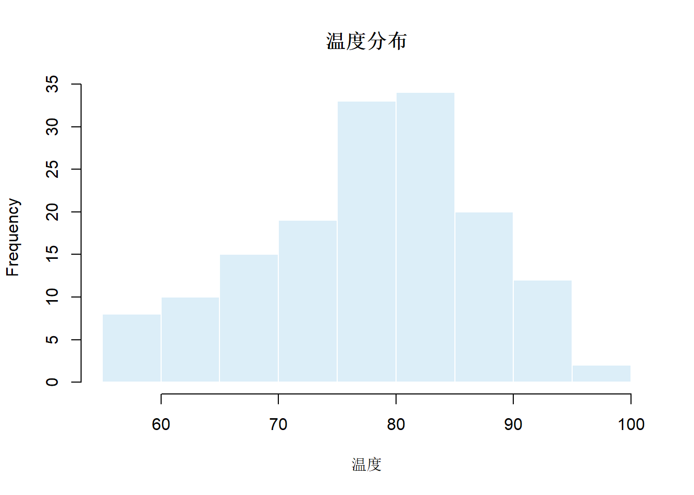
直方图面积较大，浅色填充和白色边框通常能提高图面清晰度。
箱线图适合比较不同组的数值分布。
boxplot(
Sepal.Length ~ Species,
data = iris,
main = "不同鸢尾花物种的萼片长度",
xlab = "物种",
ylab = "萼片长度"
)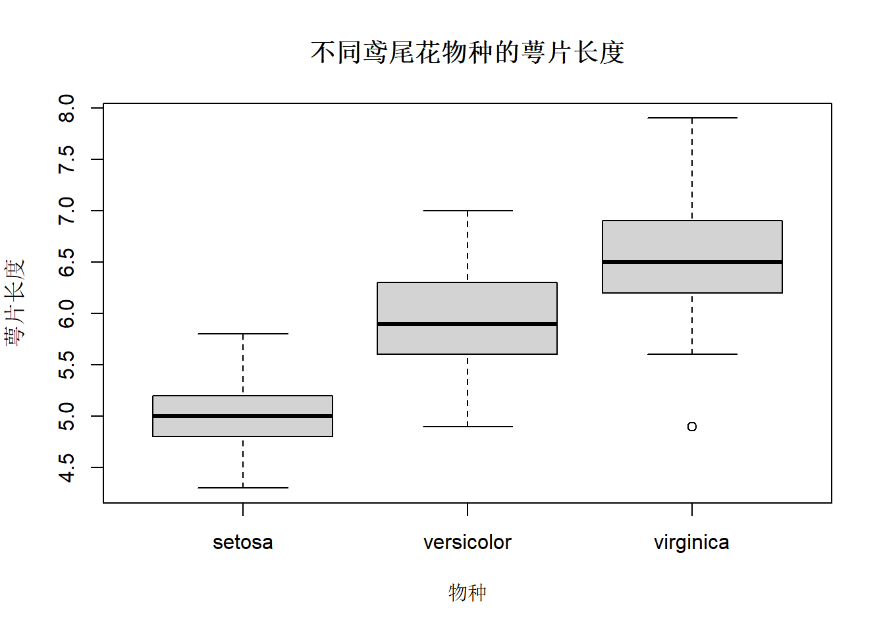
这里出现了两个重要写法：
| 写法或参数 | 控制什么 |
|---|---|
Sepal.Length ~ Species |
公式写法，左边是数值变量，右边是分组变量 |
data = iris |
说明变量来自 iris 数据集 |
修改箱线图颜色：
species_col <- c(
setosa = "#0072B2",
versicolor = "#D55E00",
virginica = "#009E73"
)
boxplot(
Sepal.Length ~ Species,
data = iris,
col = species_col,
border = "gray30",
main = "给不同组设置颜色",
xlab = "物种",
ylab = "萼片长度"
)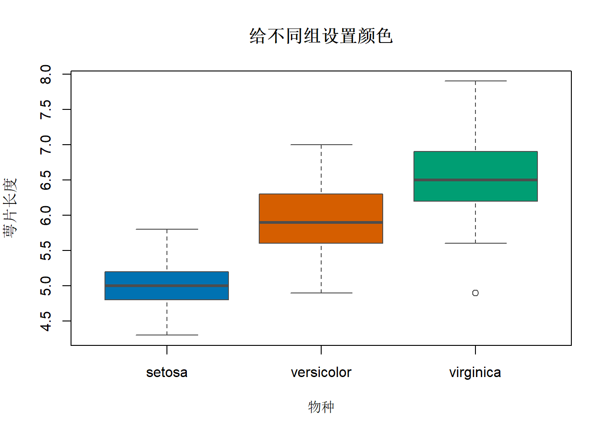
| 参数 | 控制什么 |
|---|---|
col |
箱子的填充颜色 |
border |
箱子的边框颜色 |
柱状图适合展示频数、总量、均值等汇总结果。
示例展示不同气缸数汽车的数量。
cyl_count <- table(mtcars$cyl)
barplot(cyl_count)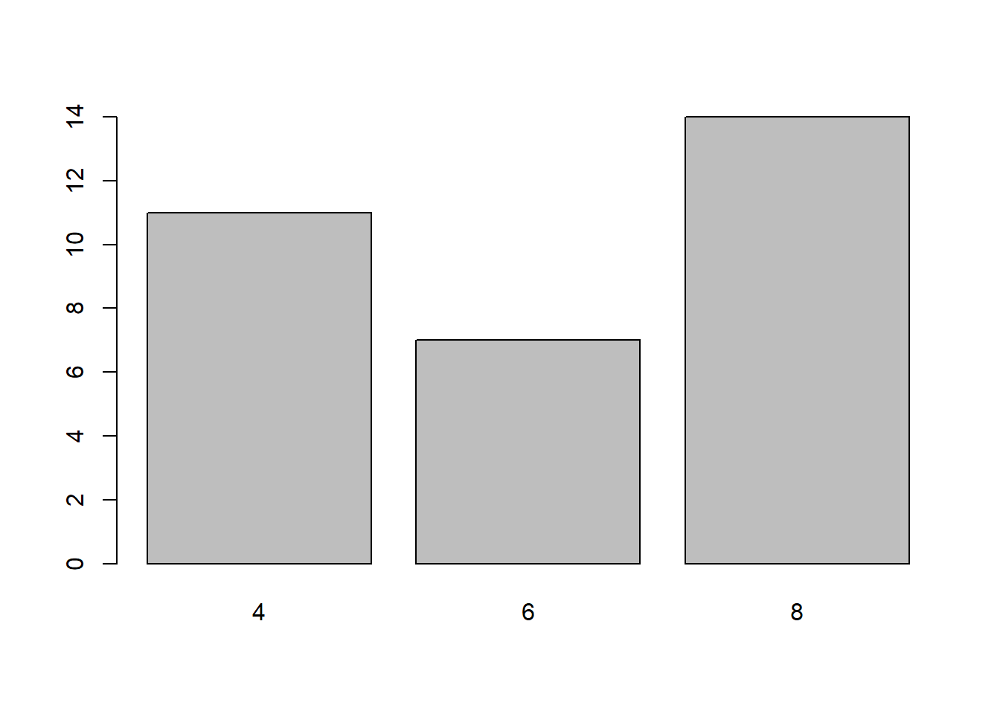
修改柱状图：
barplot(
cyl_count,
col = cyl_col[names(cyl_count)],
border = NA,
main = "不同气缸数汽车的数量",
xlab = "气缸数",
ylab = "汽车数量"
)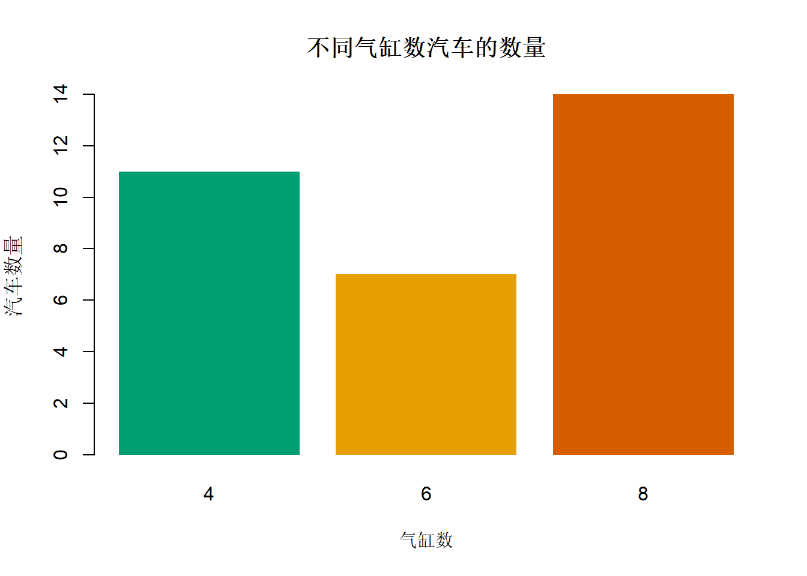
| 参数 | 控制什么 |
|---|---|
border = NA |
不显示柱子的边框 |
names(cyl_count) |
取出柱子的类别名称，用来匹配颜色 |
柱状图需要明确柱高含义。此处柱高代表汽车数量。
plot(x, y) 是最常见的用法。plot() 还会根据输入对象类型选择不同画法。
plot() 是泛型函数，会根据输入对象类型调用相应的绘图方法。
| 代码 | 数据类型 | 常见结果 |
|---|---|---|
plot(x, y) |
两个数值向量 | 散点图 |
plot(y ~ x, data = 数据集) |
公式写法 | 根据变量类型画图 |
plot(分类变量, 数值变量) |
分组 + 数值 | 箱线图 |
plot(数据框) |
多个变量 | 散点图矩阵 |
例如：
plot(iris$Species, iris$Sepal.Length)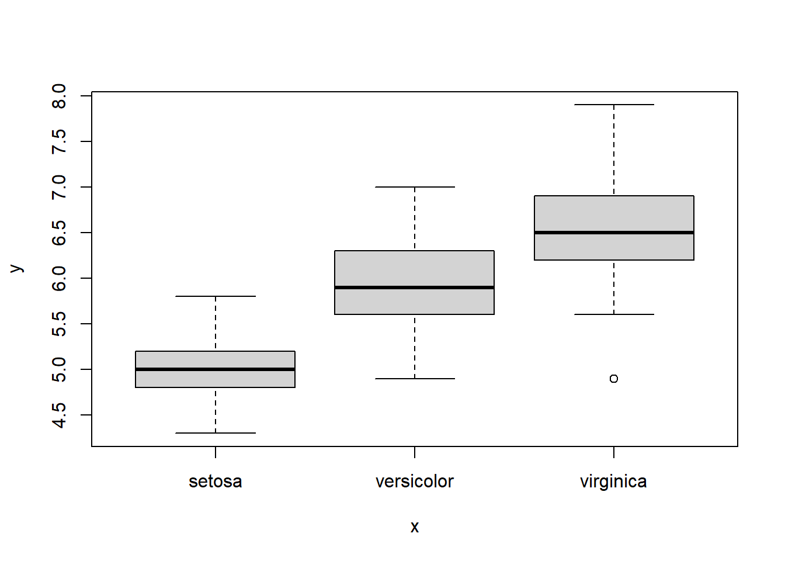
R 看到横轴是分类变量、纵轴是数值变量，于是自动画箱线图。
plot(iris[1:4])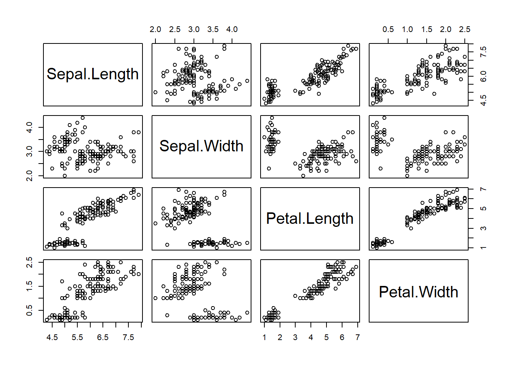
R 看到一个数据框，于是自动画出变量两两之间的散点图。
这体现了 plot() 的底层逻辑：根据对象类型选择绘图方法。
颜色的目的不是让图更花，而是让信息更清楚。
| 情况 | 推荐做法 | 不推荐做法 |
|---|---|---|
| 只有一个重点 | 重点用蓝色或橙色，其他用灰色 | 所有元素都用强颜色 |
| 有多个类别 | 固定每一类的颜色 | 让颜色随机变化 |
| 点很多 | 使用稍微透明或较小的点 | 使用又大又深的点 |
| 要打印 | 同时使用点型或线型区分 | 只靠红色和绿色区分 |
下面是一组常用分类配色：
good_col <- c(
blue = "#0072B2",
orange = "#E69F00",
green = "#009E73",
red = "#D55E00",
purple = "#CC79A7",
gray = "gray60"
)
barplot(
rep(1, length(good_col)),
col = good_col,
border = NA,
names.arg = names(good_col),
las = 2,
yaxt = "n",
main = "一组常用分类配色"
)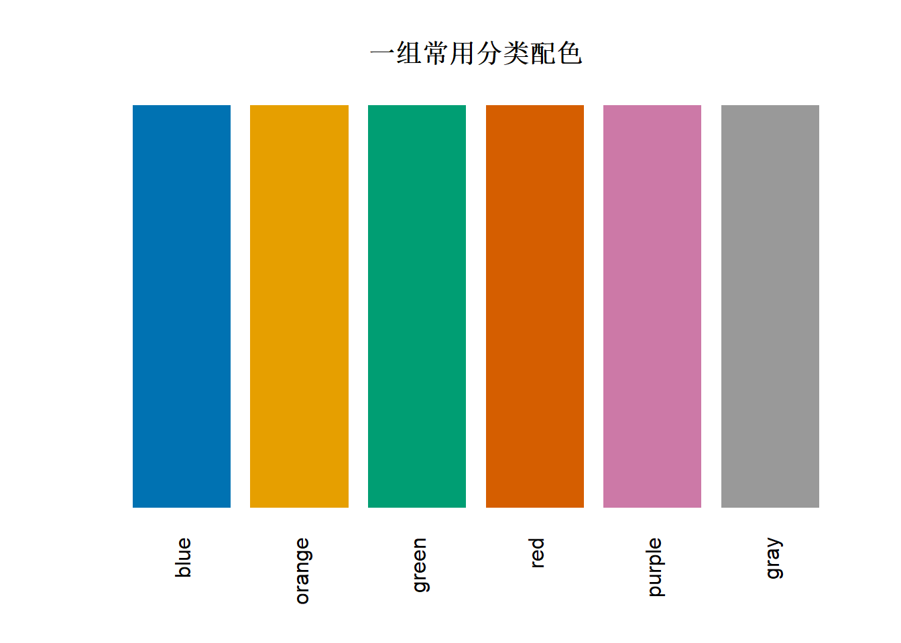
这里出现的新参数：
| 参数 | 控制什么 |
|---|---|
names.arg |
柱子下面显示的文字 |
las = 2 |
坐标轴文字垂直显示 |
yaxt = "n" |
不显示纵轴 |
par() 用来设置整张画布。最常用的是 mfrow，意思是一页放多张图。
| 参数 | 控制什么 | 示例 |
|---|---|---|
mfrow |
多图按行排列 | mfrow = c(1, 2) 表示 1 行 2 列 |
no.readonly = TRUE |
保存当前可修改的图形参数 | 常用于画完后恢复设置 |
安全写法：
old_par <- par(no.readonly = TRUE)
par(mfrow = c(1, 2))
plot(x, y)
hist(airquality$Temp)
par(old_par)实际画一次：
old_par <- par(no.readonly = TRUE)
par(mfrow = c(1, 2))
plot(
x, y,
pch = 19,
col = "#0072B2",
main = "散点图"
)
hist(
airquality$Temp,
col = "#DCEEF8",
border = "white",
main = "直方图",
xlab = "温度"
)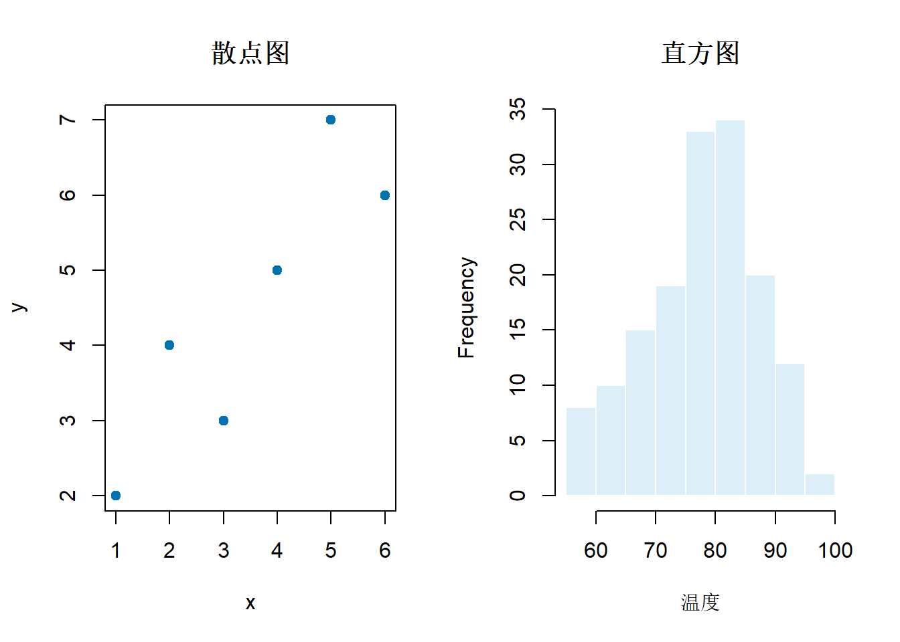
par(old_par)par() 修改的是图形设备设置，使用后通常恢复原设置。
layout() 比 par(mfrow = ...) 更灵活，可设置不同图形占用不同大小的区域。
布局矩阵示例：
matrix(c(1, 1, 2, 3), nrow = 2, byrow = TRUE)它表示：
| 位置 | 含义 |
|---|---|
数字 1 |
第 1 张图的位置 |
两个 1 连在一起 |
第 1 张图占两个格子 |
数字 2 |
第 2 张图的位置 |
数字 3 |
第 3 张图的位置 |
| 参数 | 控制什么 |
|---|---|
matrix() |
创建布局矩阵 |
nrow = 2 |
矩阵有 2 行 |
byrow = TRUE |
按行填入数字 |
old_par <- par(no.readonly = TRUE)
layout(matrix(c(1, 1, 2, 3), nrow = 2, byrow = TRUE))
plot(
mtcars$wt, mtcars$mpg,
pch = 19,
col = "#0072B2",
main = "主图：散点图",
xlab = "汽车重量",
ylab = "每加仑行驶英里数"
)
hist(
mtcars$mpg,
col = "#DCEEF8",
border = "white",
main = "油耗分布",
xlab = "mpg"
)
barplot(
table(mtcars$cyl),
col = cyl_col,
border = NA,
main = "气缸数"
)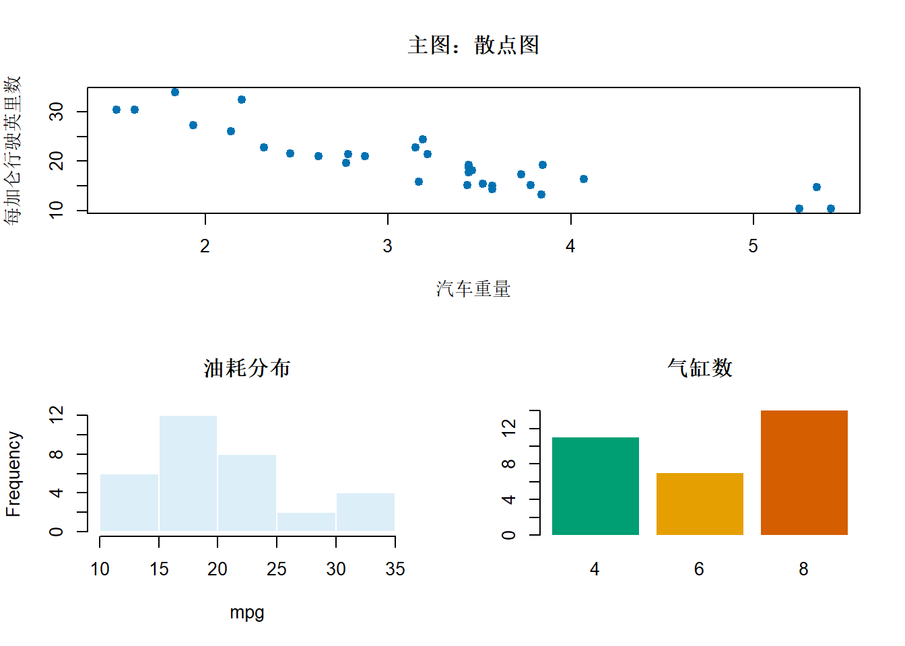
par(old_par)
layout(1)layout(1) 的作用是把布局恢复为一张图占满整个画布。
画完图以后，可以保存为图片文件。常见格式有 PNG 和 PDF。
PNG 适合放在课件、网页或 Word 文档中。
png(
filename = "scatter_plot.png",
width = 1200,
height = 900,
res = 150
)
plot(
mtcars$wt, mtcars$mpg,
pch = 19,
col = "#0072B2",
main = "汽车重量与油耗",
xlab = "汽车重量",
ylab = "每加仑行驶英里数"
)
dev.off()| 参数或函数 | 控制什么 |
|---|---|
png() |
打开一个 PNG 图片设备 |
filename |
保存的文件名 |
width |
图片宽度，默认单位是像素 |
height |
图片高度，默认单位是像素 |
res |
图片分辨率 |
dev.off() |
关闭图片设备，真正写出文件 |
PDF 适合论文、书籍或需要矢量图的场景。
pdf(
file = "scatter_plot.pdf",
width = 6,
height = 4
)
plot(
mtcars$wt, mtcars$mpg,
pch = 19,
col = "#0072B2",
main = "汽车重量与油耗",
xlab = "汽车重量",
ylab = "每加仑行驶英里数"
)
dev.off()| 参数或函数 | 控制什么 |
|---|---|
pdf() |
打开一个 PDF 图形设备 |
file |
保存的文件名 |
width |
图片宽度，单位是英寸 |
height |
图片高度，单位是英寸 |
dev.off() |
关闭图形设备 |
保存图片时需要执行 dev.off() 关闭图形设备，否则文件可能没有正常写完。
练习一：用 x <- 1:6 和 y <- c(2, 4, 3, 5, 7, 6) 画一张散点图。要求：
x <- 1:6
y <- c(2, 4, 3, 5, 7, 6)
plot(
x, y,
pch = 19,
col = "#0072B2",
main = "简单散点图",
xlab = "时间",
ylab = "观测值"
)练习二：把练习一改成点线图。要求：
type = "b"。2。1.5。plot(
x, y,
type = "b",
pch = 19,
cex = 1.5,
lwd = 2,
col = "#0072B2",
main = "点线图",
xlab = "时间",
ylab = "观测值"
)练习三：用 airquality$Temp 画直方图。要求：
breaks = 10。hist(
airquality$Temp,
breaks = 10,
col = "#DCEEF8",
border = "white",
main = "温度分布",
xlab = "温度"
)练习四：用 par(mfrow = c(1, 2)) 把散点图和直方图放在同一页。
old_par <- par(no.readonly = TRUE)
par(mfrow = c(1, 2))
plot(x, y, pch = 19, col = "#0072B2")
hist(airquality$Temp, col = "#DCEEF8", border = "white")
par(old_par)练习五：把自己最满意的一张图保存成 PNG 文件。
png("my_first_plot.png", width = 1200, height = 900, res = 150)
plot(
x, y,
pch = 19,
col = "#0072B2",
main = "我的第一张保存图片",
xlab = "时间",
ylab = "观测值"
)
dev.off()基础绘图的常用流程如下：
| 顺序 | 操作 |
|---|---|
| 1 | 用 plot(x, y) 画出基础图 |
| 2 | 用 main、xlab、ylab 说明图 |
| 3 | 用 pch、cex、col 修改点 |
| 4 | 用 type、lty、lwd 修改线 |
| 5 | 用 grid()、abline()、text()、legend() 添加辅助元素 |
| 6 | 用 par() 或 layout() 排列多图 |
| 7 | 用 png() 或 pdf() 保存图片 |
图形质量取决于变量选择、参数设置和信息表达。每个参数都应服务于数据呈现和图形可读性。